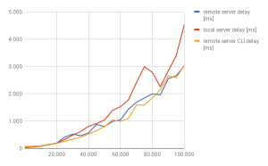

Wie wirken sich viele 301 Weiterleitungen auf die Performance aus?
Um Weiterleitungen kommt man fast nicht herum. Vor allem im Bereich der Suchmaschinenoptimierung (SEO) sollte man vermeiden, dass es auf der Website zu 404-Fehlern kommt - also Ressourcen, die nicht (mehr) vorhanden sind.
Ein Weg, um das zu beheben, ist die Einrichtung einer Weiterleitung von der alten, nicht mehr vorhandenen Ressource auf die neue Ressource. Der HTTP-Statuscode dafür ist entweder 301 (temporär) oder 302 (für eine dauerhafte Weiterleitung). Weiterleitungen können z.B. mit einer .htaccess Datei eingerichtet werden. Dazu aktiviert man zunächst die sogenannte RewriteEngine, um eine URL zu einer anderen URL “weiterzuleiten”. Dann kann man beliebig viele, Regeln nach folgendem Prinzip festlegen (freilich gibt es noch weitaus mehr Möglichkeiten, wie z.B. reguläre Ausdrücke):
RewriteEngine On Redirect 302 /redirect0r/foobar/1/ /redirect0r/foobar/index.php Redirect 302 /redirect0r/foobar/2/ /redirect0r/foobar/index.php
Wenn man nun von einem System (z.B. Joomla) auf ein anderes System (z.B. Wordpress) umzieht und dabei nicht nur auf eine veraltete URL sondern auf 100 URLs stößt, die im neuen System nicht mehr existieren, stellt sich oft die Frage: Was mache ich mit all den alten URLs, die ich im neuen System nicht exakt abbilden kann? Macht es Sinn, die htaccess-Datei mit zahllosen Weiterleitungen zu überfluten? Es kommen zu ersten Zweifeln: Die htaccess-Datei wird bei jedem Aufruf der Website geladen. Kann eine große htaccess-Datei sich also negativ auf die Performance der Seite auswirken?
Die Frage hat auch mich beschäftigt und deshalb habe ich ein kleines PHP-Script geschrieben, dass helfen soll, die Antwort zu finden.
Funktion
Der Quellcode für das PHP-Script ist über github verfügbar. Das Script kann im Browser oder über die Kommandozeile aufgerufen werden. Sämtliche Einstellungen werden in einer JSON-Datei vorgenommen.
Der Ablauf des Scripts ist relativ einfach. In einer Schleife schreibt es eine beliebige Anzahl von Weiterleitungs-Regeln in eine htaccess-Datei. Diese Regeln haben folgenden Aufbau:
Redirect 302 /foobar/i/ /foobar/index.php
/foobar ist der Ordner, der für die Messung verwendet wird. In diesem Ordner befindet sich auch die htaccess-Datei. i ist eine fortlaufende Ziffer, die mit jedem Schleifendurchlauf inkrementiert wird. Schließlich wird das Ziel der Weiterleitung mit /foobar/index.php angegeben. Der Ordner und die Zieldatei sowie der Inhalt der Zieldatei können angepasst werden.
Nicht jeder Schleifendurchlauf schreibt in die htaccess-Datei und ruft Test-URL sofort auf. Das geschieht in definierbaren Abschnitten. Diese Schrittweite ist definierbar. Die Zeit für den Aufruf wird schließlich gemessen .
Weiterhin ist es möglich, die Aufrufe innerhalb einer Schrittweite zu wiederholen, also mehrere Abfragen nacheinander, um z.B. in der späteren Auswertung aus den Ergebnissen einen Mittelwert zu errechnen. Nach jeder Abfrage kann außerdem eine cool-down-Phase stattfinden, bevor der nächste Abruf stattfindet..
Messergebnisse
Die Messergebnisse offenbaren keine Überraschung. Je größer die Datei, desto größer die Antwortzeiten. Im Detail heißt das:
Gemessen wurden mit drei verschiedenen Methoden:
- auf einem lokalen Webserver (MacBook Pro mit 16 GByte RAM und 2,7 GHz i5) per Aufruf im Browser (local server)
- auf einem gehosteten Webserver (unbekannte Hardware) per Aufruf im Browser (remote server)
- auf einem gehosteten Webserver per Aufruf auf der Kommandozeile (remote server CLI)
Als Zeilenlimitin der htaccess-Datei wurden 100.000 Zeilen gewählt. Die Schrittweite beträgt 5.000. Nach jedem Aufruf gab es eine Pause von 3 Sekunden. Insgesamt gab es drei Aufrufe je Zeilenanzahl. Über diese 3 Aufrufe zu einer bestimmten Zeilenanzahl wurde schließlich der Mittelwert errechnet.
Bei 10.000 Zeilen wurde bei allen Methoden ca. 90 ms gemessen. Bei 20.000 Zeilen in der htaccess-Datei beträgt die Reaktionszeiten knapp das doppelte, aber immer noch recht unauffällige 185 ms. Ab da gehen die gemessenen Zeit leicht auseinander, der lokale Server scheint die schlechtere Performance zu haben.
Bei 60.000 Zeilen wird bei allen Methoden die “magische” Grenze von 1 Sekunde überschritten. Die Antwortzeiten steigen jetzt nicht mehr proportional. Bei 100.000 Zeilen benötigt der lokale Server schon über 4 Sekunden für die Antwort. Der gehostete Webserver braucht dafür über knapp 3 Sekunden.
[caption id=“attachment_1580” align=“aligncenter” width=“300”] 
{kind=link}
Fazit
Natürlich wirkt sich eine große htaccess-Datei auf die Performance des Servers auf. Denn wie bereits bemerkt, muss der Webserver diese Datei bei jeder Anfrage öffnen und verarbeiten. Allerdings ist der negative Einfluss ziemlich gering und macht sich erst bei einer sehr großen Anzahl von Zeilen bemerkbar.
Eine htaccess-Datei mit 10.000 Zeilen verringert die Antwortzeit kaum. Allerdings steigt die Antwortzeit überproportional an. Bei 100.000 Zeilen ist sie bereits 50 mal langsamer.
Im Bereich ab 40.000 Zeilen dürfte der Einfluss auch nach außen hin spürbar sein. Natürlich hängt auch diese Erkenntnis stark von der verwendeten Hardware ab: Der lokale Webserver ist bei meinen Messungen etwas langsamer als der Server des Hosters.
Wer eine htaccess-Datei mit 10.000 Weiterleitungen pflegt sollte grundsätzlich sein Konzept überdenken. Oft lässt sich das entweder durch einen sauberen Umzug bzw. eine Anpassung des neuen Systems oder durch Weiterleitungen mit regulären Ausdrücken besser lösen. Am besten ist es natürlich, wenn man gar nicht erst in die Verlegenheit kommt, Weiterleitungen nutzen zu müssen.